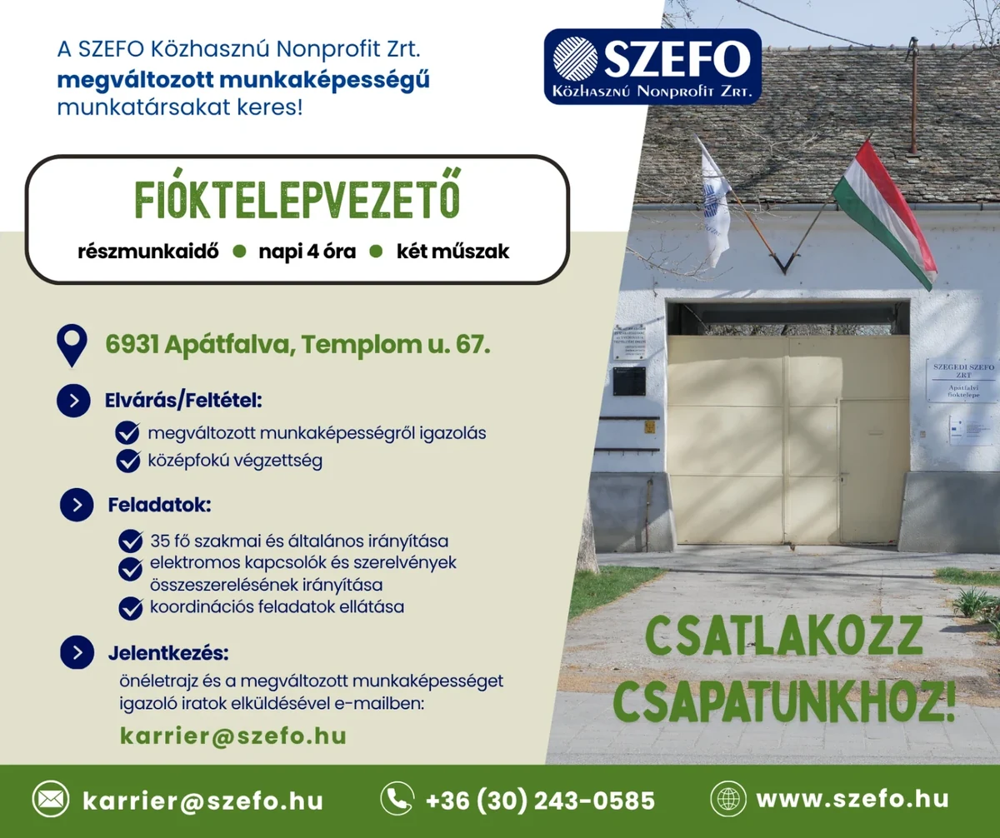

Fióktelepvezető
- Megváltozott munkaképességű munkatárs
- 6931 Apátfalva, Templom u. 67.
- Részmunkaidő · napi 4 óra · két műszak
- FEOR: 3212
Munkatársat keresünk – Fióktelepvezető
Megváltozott munkaképességű munkatársat keresünk FIÓKTELEPVEZETŐ munkakörbe (FEOR: 3212), a Szegedi SZEFO Zrt. Apátfalvi Fióktelepére.
Munkavégzés helye
Szegedi SZEFO Zrt.
6931 Apátfalva, Templom u. 67.
Munkaidő
Részmunkaidő – napi 4 óra, két műszak.
Munkakezdés
2026. április 22-től folyamatosan.
Elvárások / feltételek
- Megváltozott munkaképességről szóló igazolás.
- Középfokú végzettség: szakiskola, szakközépiskola vagy gimnázium.
- Műszaki végzettség előnyt jelent.
Feladatok
- 35 fő szakmai és általános irányítása.
- Koordinációs feladatok ellátása.
- Elektromos kapcsolók és szerelvények összeszerelésének irányítása.
Amit kínálunk
- Átlátható bérezési rendszer: minimálbér és bónusz.
- Munkába járás támogatása a hatályos jogszabályok szerint.
- Stabil, támogató munkakörnyezet.
Jelentkezés
Önéletrajz és a megváltozott munkaképességet igazoló iratok elküldésével lehet jelentkezni a következő e-mail-címen:
E-mail: karrier@szefo.hu
További információ
Rehabilitációs tanácsadó munkatársunk készséggel ad tájékoztatást telefonon.
Telefon: +36 62 / 554 054 / 108-as mellék
Munkatársakat keresünk!